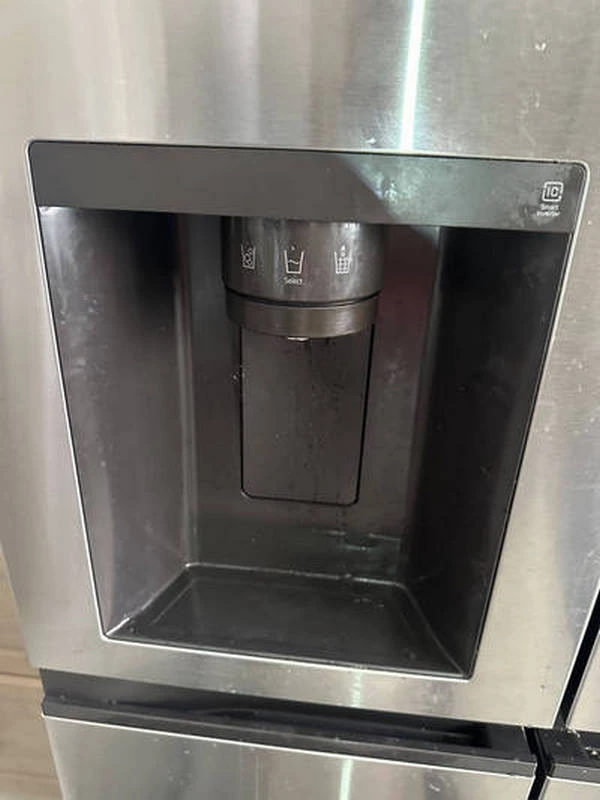

LG Refrigerator Is Not Cooling, but the Freezer Still Works: Possible Evaporator Fan, Air Damper, Temperature Sensor, or No Frost System Failure
An LG refrigerator that has a properly functioning freezer while the fresh food compartment stops cooling is one of the most common issues found in models equipped with the No Frost system. At first, the problem may seem minor because frozen foods remain solid, and the compressor continues to operate. However, the temperature inside the refrigerator section gradually rises, dairy products spoil more quickly, vegetables lose their freshness, and beverages never become properly chilled. This usually indicates that the appliance is still producing cold air, but it is no longer reaching the refrigerator compartment or is not being distributed correctly.
Most modern LG refrigerators use a single evaporator located inside the freezer compartment to cool both sections. The evaporator produces cold air, while an evaporator fan circulates that air through dedicated ducts into the fresh food compartment. If any part of this cooling system fails, the freezer can continue operating normally while the refrigerator section slowly becomes warm. This is why many homeowners initially believe the refrigerator is working correctly until they notice spoiled food.
One of the most common causes is a failed evaporator fan motor. Whenever the compressor is running, the fan should distribute cold air evenly throughout the appliance. If the motor burns out, the fan blades become jammed, or ice prevents the blades from spinning, air circulation stops. The freezer remains cold because the evaporator continues producing low temperatures, but the refrigerator compartment no longer receives enough cold air. Sometimes the problem is accompanied by the absence of the normal fan sound after the door is closed, while in other cases a grinding or scraping noise may indicate that ice is interfering with the fan.

Another possible cause is a faulty air damper. In LG refrigerators, the air damper automatically regulates how much cold air moves from the freezer into the refrigerator compartment. If the damper becomes stuck in the closed position due to mechanical wear, a damaged actuator, or a failed motor, very little cold air reaches the fresh food section. As a result, the freezer maintains normal temperatures while the refrigerator compartment gradually warms to room temperature.
A defective temperature sensor is another common reason for this issue. The sensor continuously monitors the temperature inside the refrigerator compartment and sends information to the electronic control board. If the sensor provides inaccurate readings, the control board may fail to open the air damper at the correct time or may not activate the cooling cycle as needed. In this situation, the compressor may continue running for long periods, yet the refrigerator section remains too warm.
Special attention should also be given to the No Frost system. This system automatically removes frost from the evaporator using a defrost heater, defrost sensor, and thermal fuse. If any of these components fail, frost gradually builds up on the evaporator coils. Air can no longer pass freely through the evaporator, and the fan either struggles to circulate air or stops altogether because of excessive ice accumulation. Under these conditions, the freezer usually continues maintaining freezing temperatures for some time, while the refrigerator compartment loses its cooling performance almost completely.
Many homeowners attempt to solve the problem by unplugging the refrigerator and allowing it to thaw for 24 hours or longer. If the refrigerator begins cooling normally after a complete defrost but develops the same problem again within several days, this is a strong indication that the automatic defrost system has failed. A full defrost only removes the accumulated ice temporarily—it does not repair the defective component responsible for the frost buildup.
In some cases, blocked air passages may also reduce cooling efficiency. Ice accumulation, debris, or foreign objects can partially obstruct the airflow between the freezer and refrigerator compartments. Improper food storage may also contribute to uneven cooling. Large containers or overfilled shelves can block air vents, preventing cold air from circulating properly. Although this situation is less common than mechanical or electrical failures, it should still be considered during diagnosis.
Typical warning signs that an LG refrigerator requires professional service include a warm refrigerator compartment with a properly functioning freezer, a compressor that runs continuously, excessive frost hidden behind the freezer panel, unusual fan noises, error codes displayed on the control panel, or cooling that temporarily returns after defrosting but disappears again within a few days.
Attempting to repair these problems without proper experience can be risky. Accessing the evaporator fan requires partial disassembly of the freezer compartment, while testing the defrost heater, thermal fuse, and temperature sensors requires electrical measurements with specialized equipment. In addition, modern LG refrigerators rely heavily on electronic control boards, and replacing parts without accurate diagnosis can result in unnecessary expenses or additional damage.
To help extend the life of your refrigerator, keep air vents clear, avoid overloading shelves with food, minimize the amount of time the doors remain open, and regularly inspect the door gasket. A worn or damaged door seal allows warm air to enter the refrigerator continuously, increasing frost accumulation on the evaporator and placing additional stress on the No Frost system. It is important not to postpone repairs once the refrigerator compartment stops cooling properly. Even if the freezer appears to function normally, the compressor may be forced to run almost continuously, increasing electricity consumption and accelerating wear on critical components. Identifying a faulty evaporator fan, air damper, temperature sensor, or No Frost component early can significantly reduce repair costs and help prevent more serious failures. If your LG refrigerator is no longer cooling the fresh food compartment while the freezer continues to work normally, professional diagnosis is the best solution. An experienced appliance repair technician can accurately identify the source of the problem, inspect the evaporator fan, temperature sensors, air damper, No Frost system, and electronic control board, then perform reliable repairs using high-quality replacement parts. Prompt service will restore proper cooling performance, improve energy efficiency, and help prevent the issue from recurring.